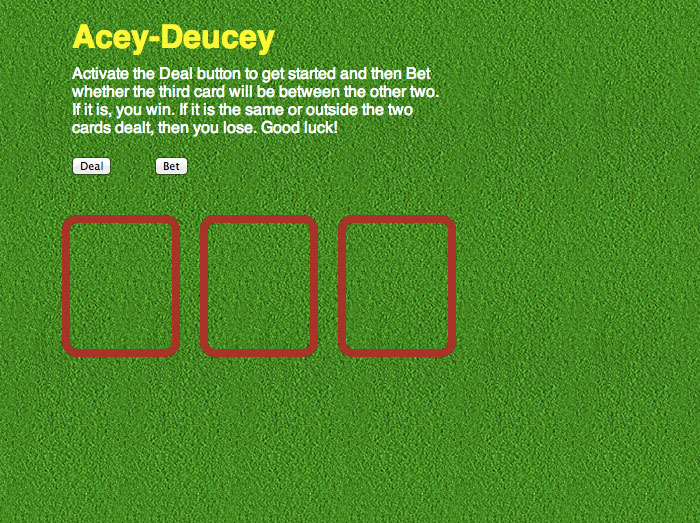
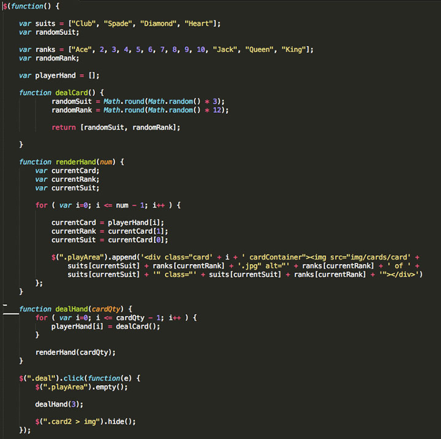
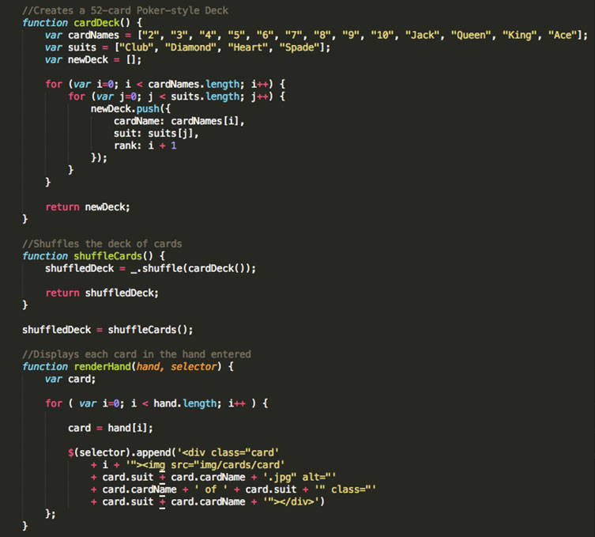
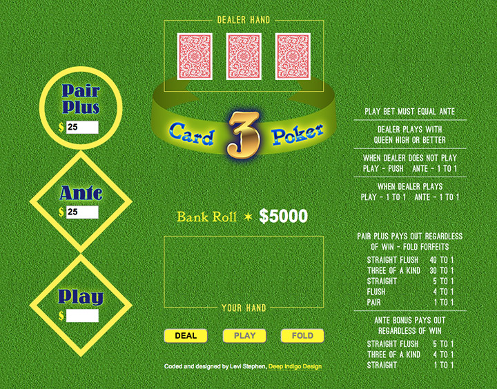

Development of Javascript/JQuery-based game for Web Development 2 course.
There's nothing quite like the camaraderie experienced at a winning casino table game. Roulette, Blackjack, and others are alright, but Three Card Poker is my favorite because it plays on some of the same rules of classic poker games like 5 Card Stud and Texas Hold 'em. There are a multitude of digital, interactive poker games out there, but there doesn't seem to be many of the 3 card table game variety. So, I set out to create one of my own using Javascript, JQuery, and a dash of the Underscore library. The logic of the game was built upon the structure of HTML and style of CSS as well.
The logic of the javascript code in this game was programmed progressively along with my growing knowledge throughout the course. I thoroughly enjoyed collaborating with the instructor and felt my mind opening to the possibilities of bringing ideas to life through the logic and reasoning of programming code.
Parts of the game were developed through experimenting with the game Acey-Deucey, specifically the card-dealing function and rendering of the hand. The betting function and ability to verify the outcome is yet to be developed at this point in the development.
You can play a live version of this game and see the complete files on Git Hub.
In the Acey-Deucey game, the card dealing was done by using a function which created a random number and pulled that number out of an array of suits and ranks, then concatenated that random card into the HTML to render the card.
It worked like pulling a card from a hat that an entire deck of cards was thrown into. The problem is that this method is like putting the card back into the hat after every pull, so each time a card is dealt it could be any card or even the same card.
This method was improved for the final game to include a string of several functions that dynamically creates a new deck object by iterating through the arrays of suits and ranks, shuffles the deck, and then uses that object to deal the cards in the new order until all the cards are used only once. This is similar to how a card deck would actually be used.
The layout and graphics used in the game were designed to look similar to the style of graphics found on casino table games.
